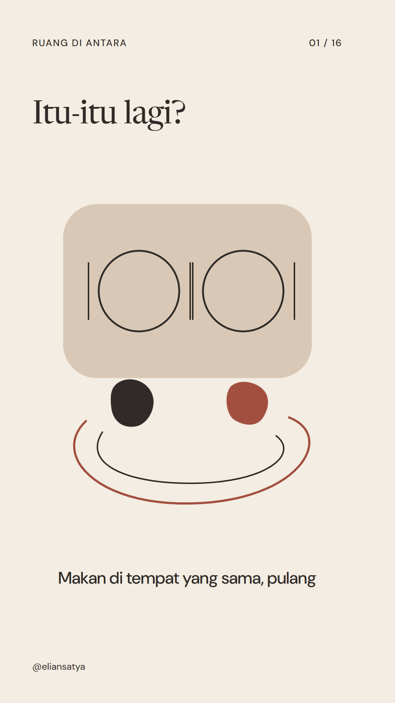
Makan di tempat yang sama, pulang lewat jalan yang sama. Kok waktu berdua terasa itu-itu lagi?
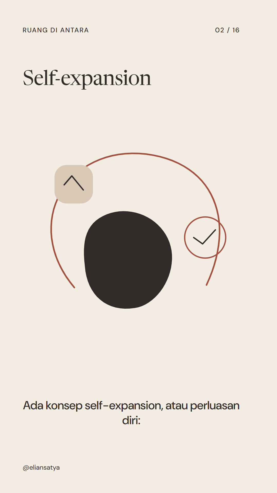
Ada konsep self-expansion, atau perluasan diri: bertambahnya pengalaman, kemampuan, atau cara pandang kita.
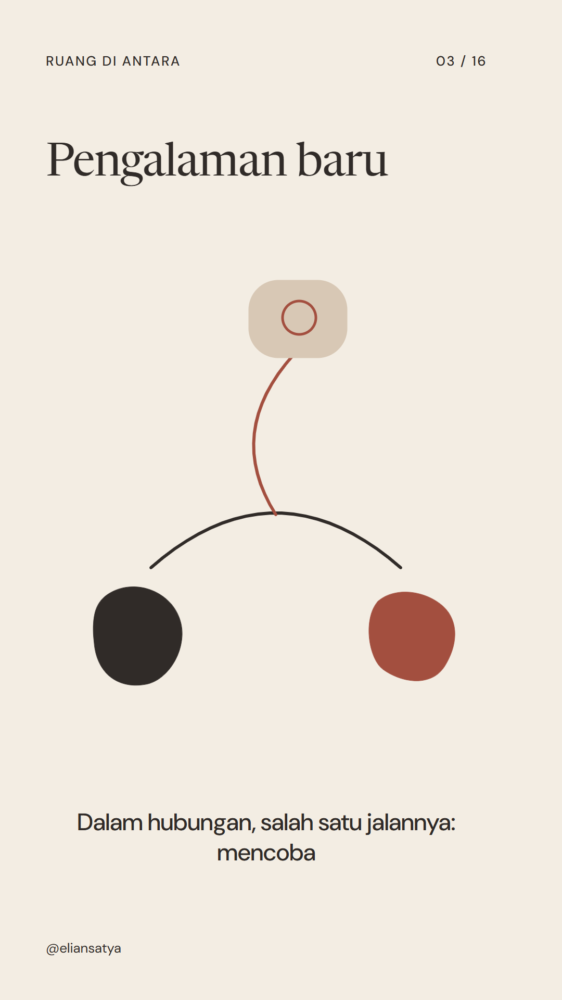
Dalam hubungan, salah satu jalannya: mencoba hal baru dan menarik bersama.
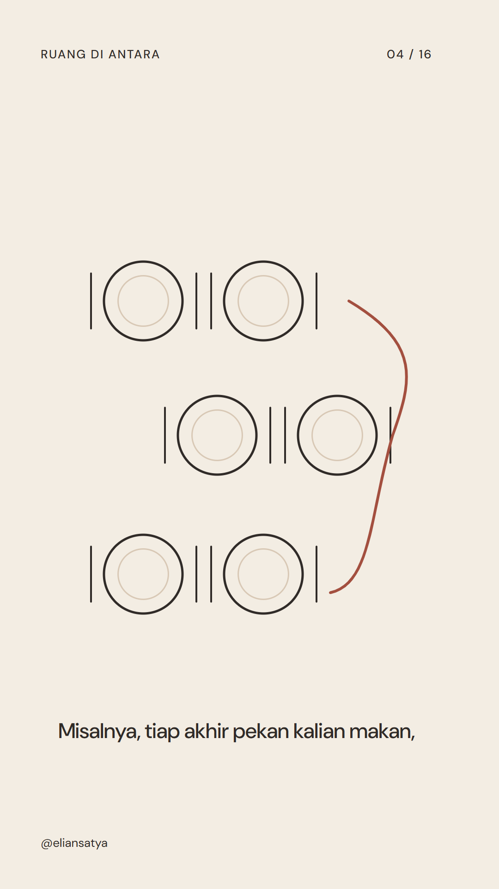
Misalnya, tiap akhir pekan kalian makan, lalu pulang. Nyaman, tapi kali ini terasa datar.
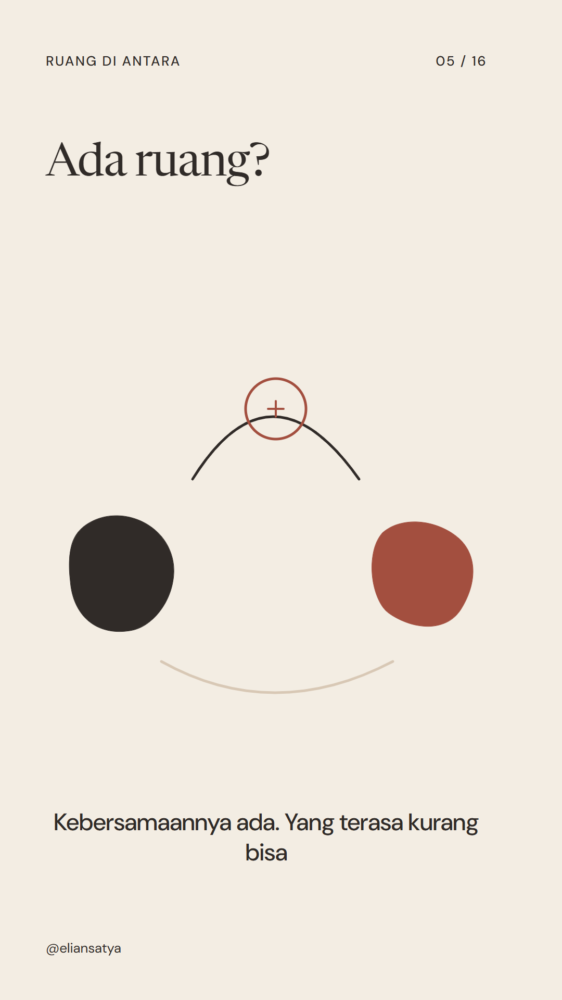
Kebersamaannya ada. Yang terasa kurang bisa jadi kesempatan mengalami sesuatu yang belum biasa.
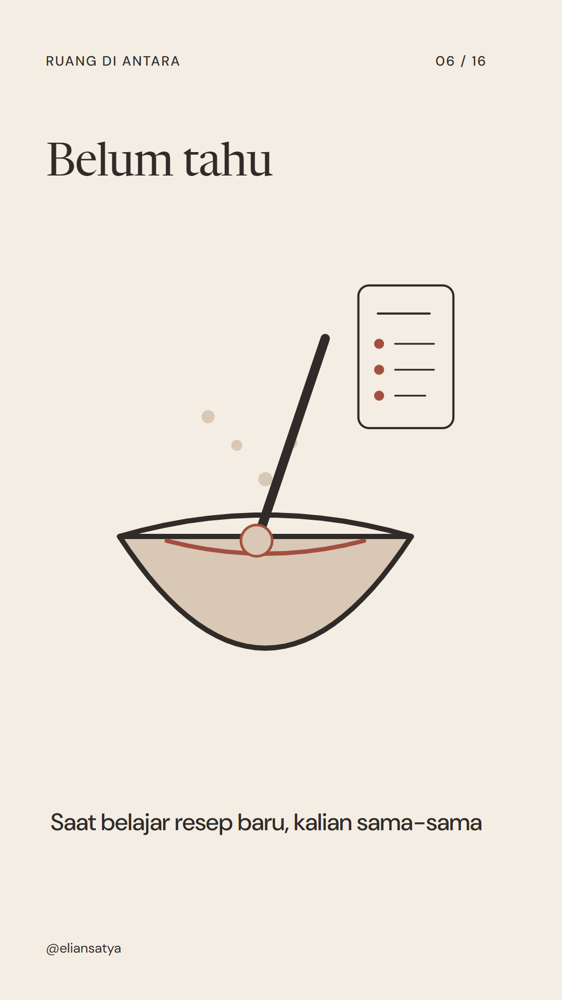
Saat belajar resep baru, kalian sama-sama belum tahu hasilnya.
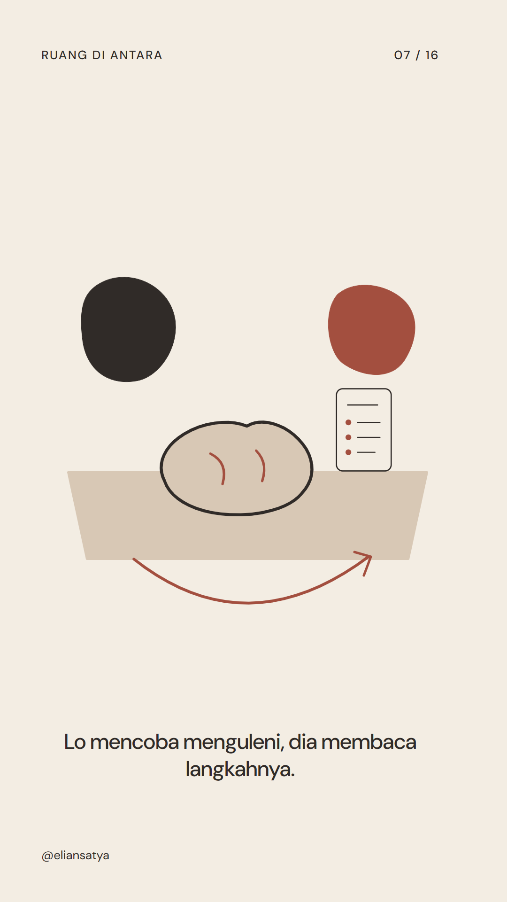
Lo mencoba menguleni, dia membaca langkahnya. Lalu bergantian saat adonannya susah dibentuk.
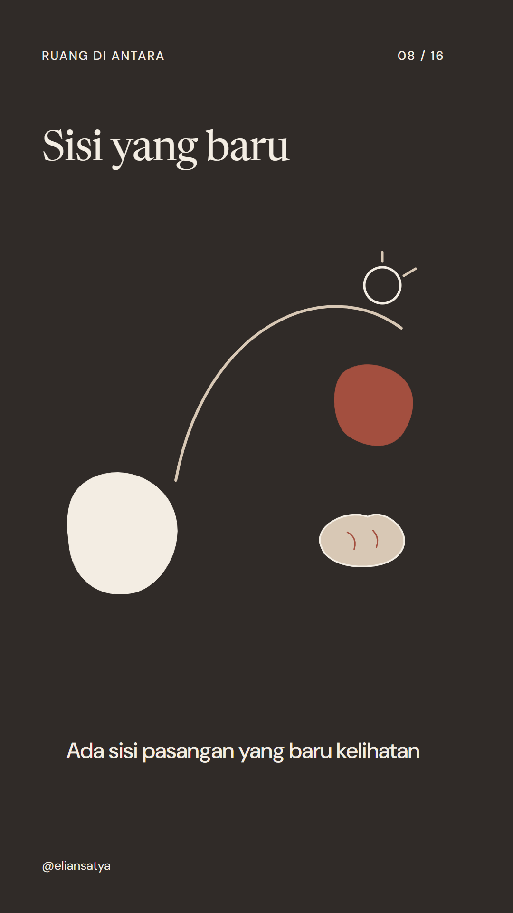
Ada sisi pasangan yang baru kelihatan ketika kalian menghadapi hal yang belum dikuasai.
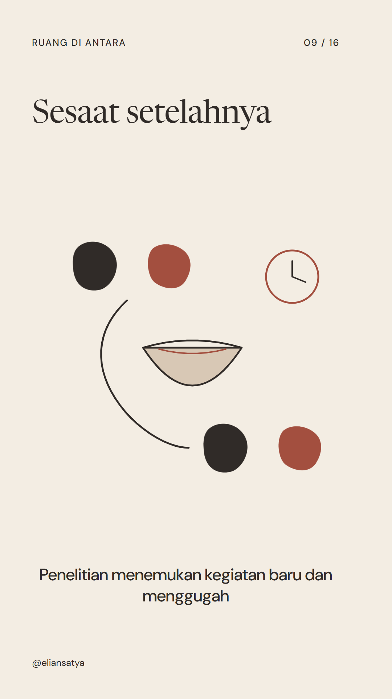
Penelitian menemukan kegiatan baru dan menggugah bersama dapat meningkatkan penilaian kualitas hubungan sesaat setelahnya.
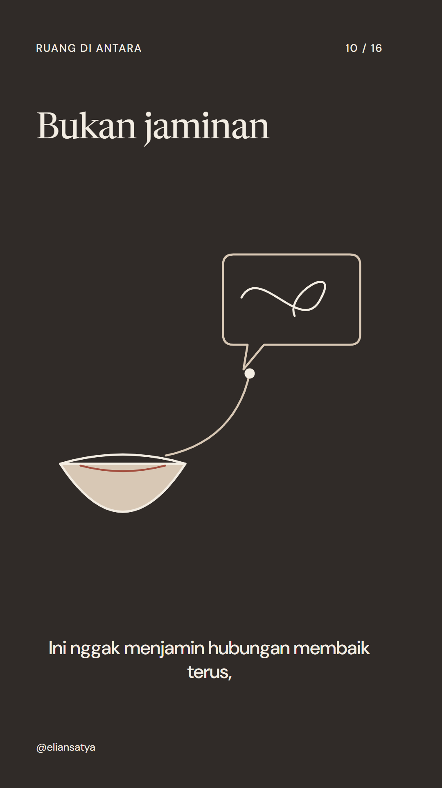
Ini nggak menjamin hubungan membaik terus, atau menyelesaikan masalah yang dibiarkan.
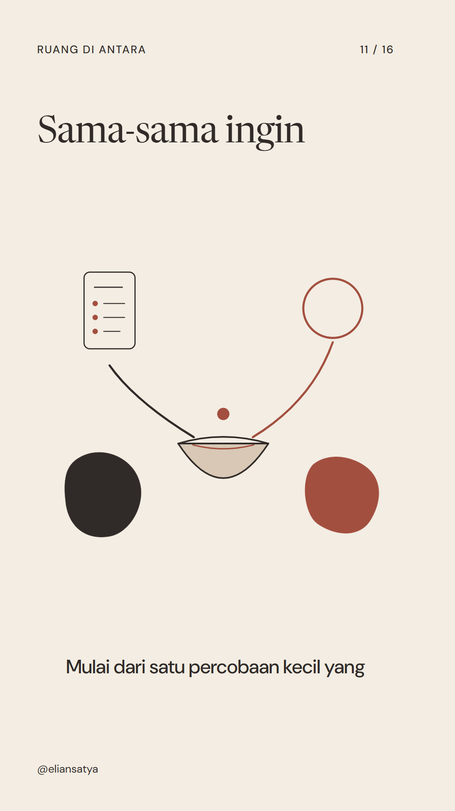
Mulai dari satu percobaan kecil yang kalian berdua ingin coba.
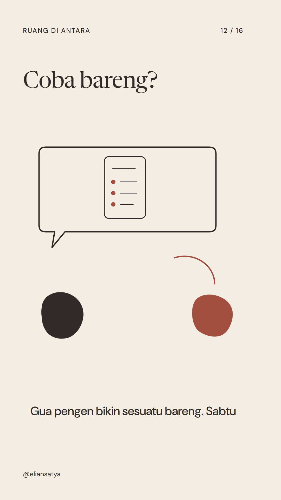
Gua pengen bikin sesuatu bareng. Sabtu kita coba resep ini, mau?
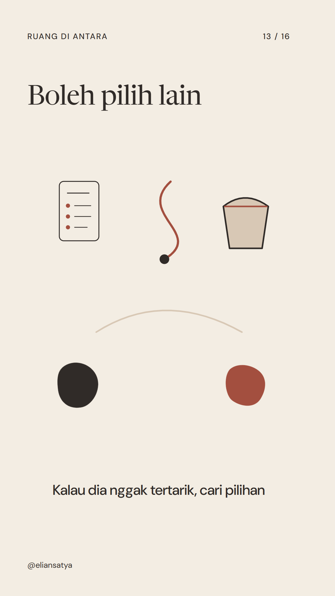
Kalau dia nggak tertarik, cari pilihan lain bersama. Nggak perlu memaksa.
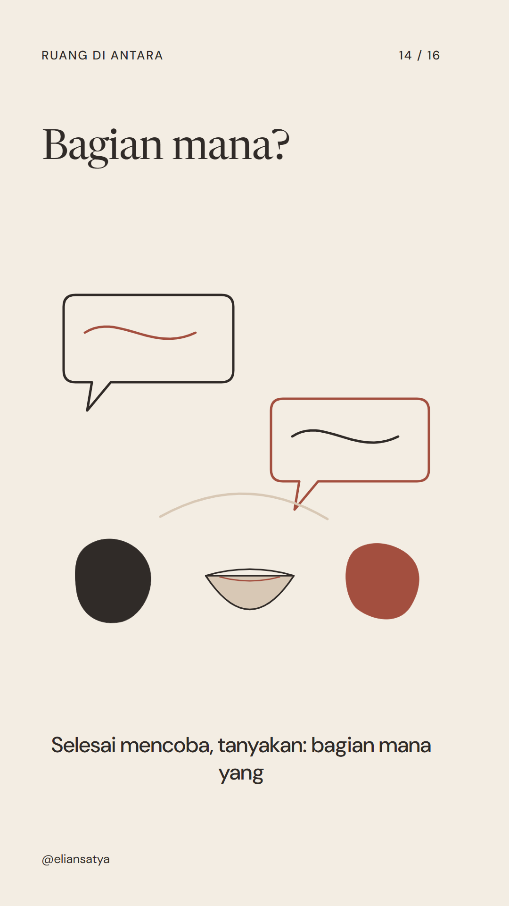
Selesai mencoba, tanyakan: bagian mana yang paling lo nikmati tadi?
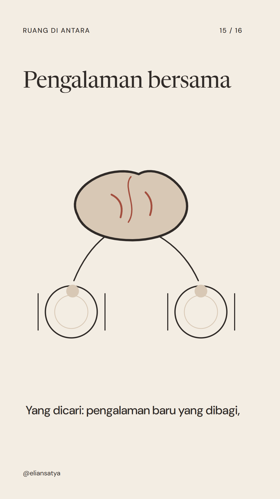
Yang dicari: pengalaman baru yang dibagi, tanpa harus sempurna atau mahal.
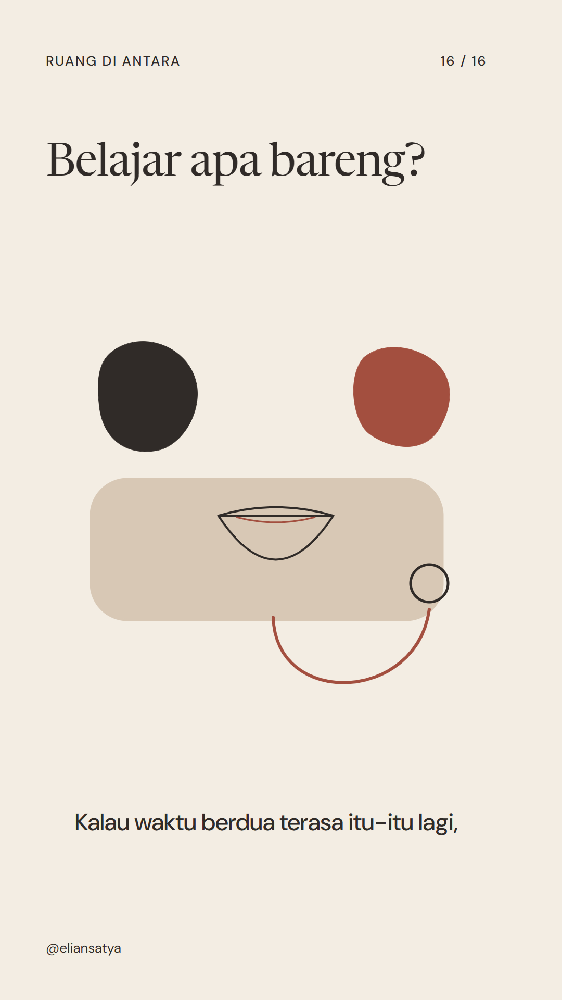
Kalau waktu berdua terasa itu-itu lagi, hal kecil apa yang ingin kalian pelajari bareng?